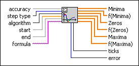
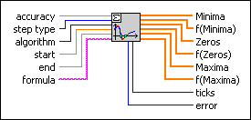

Zeros and Extrema of f(x) VI
Owning Palette: Calculus VIs
Requires: Full Development System
Determines all zeros and extrema of a 1D function in a given interval.

 Add to the block diagram Add to the block diagram |
 Find on the palette Find on the palette |
Owning Palette: Calculus VIs
Requires: Full Development System
Determines all zeros and extrema of a 1D function in a given interval.

| Add to the block diagram |
Find on the palette |
 |
accuracy controls the accuracy of the zeros and the extrema. The default is 1.00E-8. | ||||
 |
step type controls the spacing used for the function values. In general, modified function leads to more accurate zeros and extrema.
|
||||
|
algorithm is the method used by the VI.
|
||||
|
start is the start point of the interval under investigation. The default is 0.0. | ||||
|
end is the end point of the interval. The default is 1.0. | ||||
 |
formula is a string representing the function under investigation. The formula can contain any number of valid variables. | ||||
 |
Minima are the determined minimal values of formula. | ||||
|
f(Minima) are the function values at Minima. | ||||
|
Zeros are the determined zeros of formula. | ||||
|
f(Zeros) contains the function values of Zeros. Usually, these values are close to 0. | ||||
|
Maxima are the determined maximal values of formula. | ||||
|
f(Maxima) are the function values at Maxima. | ||||
 |
ticks is the time in milliseconds to analyze the formula and to produce the Minima, Zeros, andMaxima. | ||||
 |
error returns any error or warning from the VI. You can wire error to the Error Cluster From Error Code VI to convert the error code or warning into an error cluster. |